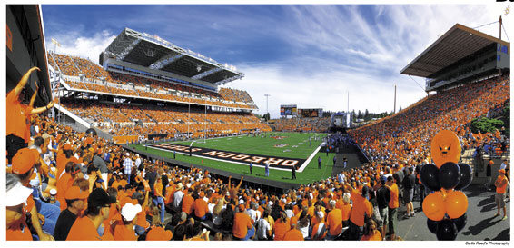

English Name: Kent State University School Website www.kent.edu School Introduction: Kent State University is located in the northeastern United States and is one of the first century-old universities recognized and recommended by the Chinese Ministry of Education. The "New American State..."
English name: Kent State University
School website www.kent.edu
School Introduction
Kent Kent State University is located here The northeastern United States, one of the first batch of American century-old universities recognized and recommended by the Chinese Ministry of Education, U.S. News & World ReportAmerican universities Ranked 175th (2016 edition). The school was founded in 1910 and consists of eight Campus It has nearly 35,000 students enrolled and more than 900 Chinese international students. Kent is one of the largest local education systems in the United States, located in Ohio Top three in size. The authoritative U.S. News & World Report rated Kent as a national composite A research university One of the top 200. Kent offers over 270 undergraduate majors, 55 master's programs, and 22 categories PhD Professional courses. For its comprehensive strengths, The Princeton Review has praised Kent for years as "the best."Midwestern University"First, it proves its strong capabilities in teaching and research. The biggest feature of this university is that it is itself Kent Town, meaning university students are everywhere in the town.

Geographical location
Ohio is located in the northeastern United States, also known as Ohio Horse chestnut Prefecture, located according to the location Ohio River Give me Lake Erie It is named after the area. It covers an area of 106,700 square kilometers. The population is 11.435 million (as of 2003), with 73% of the urban population. The capital is Columbus. The terrain slopes gently from east to west, with very little undulation. It was once invaded by glaciers, and moraine layers are widely distributed. It has a temperate continental humid climate。 The average temperature in January is -4~-2°C, in July it is 23°C, and the annual average precipitation is 950 millimeters, with one-seventh of that being snow. Forest coverage rate25%, mainly distributed in the east and south. Kent City(Kent) As a university town, it boasts beautiful scenery and is known as the "City of Trees." Kent enjoys a superior geographical location with convenient transportation and is adjacent to the city East Coast Major cities, located to the east New York It takes about 5 hours by car, and about 4 hours west to Chicago. As a university town, Kent has a very low population flow, and facilities near the school are all centered around campus Sexual services So Kent is a very safe place Small towns Life is simple and tranquil, typical of the American way of life. Students studying in an environment like Kent are not greatly disturbed.

Departmental Structure
Kent State University currently has eight faculties: the College of Letters and Sciences, the School of Architecture and Environment, the School of Business, the School of Media and Information, the School of Education, Health and Social Services, the College of Arts, the School of Nursing, the School of Technology, and more. Kent State University's School of Business is dedicated to cultivating students' leadership, team spirit, creativity, and global strategic vision Information technology Applied ability. Undergraduate majors focus on the following fields: Accounting, Computer Information Systems Economics, finance, management, marketing, and operations management. Master's programs include business management, accounting, economics, and finance. The business school also offers doctoral degrees in business studies. MBA The program has its own characteristics, emphasizing internship opportunities while also emphasizing them Practical teaching, fully integrating case studies, group activities, and highly interactive internship programs. At the same time, it also provides students with career development counseling and... Employment services。

Strong professionalism
Audiology, Nursing, fine arts, language correction
Reasons for Selection
1. Outstanding in numerous disciplines (finance, media, business, fashion, etc.)
2. A complete range of disciplines (over 270 majors).
3. Complete degree offerings (undergraduate, master's, doctoral)
4. Undergraduate education is emphasized. (A comprehensive university）
5. Campus environment safety (ranked number one in the state by the FBI in 6 years)
6. Moderate tuition costs (below average compared to similar universities in the US)
7. Reasonable living costs (rent is one-third of that in big cities)
8. Simple and fast application (not required for undergraduates). Recommendation Letter And Personal Statement）
9. Excellent student services (school buses, Wireless network, study guidance)
10. Good Learning Atmosphere (University Town)
11. Superior geographical location (distance New York Very close to Chicago,
12. Pleasant climate year-round (adjacent to the Great Lakes Region)

Admission requirements
Undergraduate: TOEFL 71, IELTS 6.0, GPA 3.0
Graduate: TOEFL 75, IELTS 6.0, GPA 3.0

Tuition fees
Tuition: $19,000 - $26,800/year

英文名称 Kent State University
学校网站 www.kent.edu
学校简介
肯特州立大学（Kent State University）位于美国东北部，是中国教育部首批认可推荐的美国百年名校之一，《美国新闻和世界报道》美国大学排名第175名（2016版本）。该校建于1910年，由八个校区构成，在校学生近35000人，中国留学生900多人。肯特是全美最大的地方性教育体系之一，在俄亥俄州规模前三。权威的《美国新闻和世界报道》将肯特评为全美综合研究型大学200强之一。肯特提供270多个本科专业，55类硕士专业以及22类博士专业课程。以其综合优势《Princeton Review》 多年来把肯特誉为“最佳中西部大学”之一，证明其教学和研究方面的雄厚实力。这所大学最大的特色是，它本身就是肯特镇，换言之，在镇内到处都是大学生。
地理位置
俄亥俄州位于美国东北部, 别称七叶树州， 因地处俄亥俄河与伊利湖之间而得名。 面积10.67万平方千米。 人口1143.5万（2003 年)，城市人口占 73%。首府哥伦布。地势自东向西缓斜，起伏很小。曾遭冰川浸入，冰碛层广布。温带大陆性湿润气候。1月平均气温－4～－2℃，7月平均气温 23℃，年平均降水量 950 毫米，其中降雪占1/7 。森林覆盖率为25%，主要分布在东部和南部。肯特市（Kent）作为一个大学城，景色优美，享有“树之城”的美誉。肯特市地理位置优越，交通便利，毗邻东海岸主要城市，往东距纽约大概5小时车程，往西距芝加哥约4 小时车程。肯特作为一个大学城，流动人口很少，学校附近的设施均以校园为中心提供支持性服务，所以肯特是一个非常安全的小城市，生活简单恬静，是典型的美国生活方式，学生在肯特这样的环境学习不会受到太多的干扰。
院系设置
肯特州立大学现设有8个院系：文学和科学学院、建筑和环境学院、商学院、传媒和信息学院、教育、卫生和社会服务学院、艺术学院、护理学院、技术学院等等。肯特州立大学的商学院致力于培养学生的领导才能、团队精神、创造性、全球性战略眼光和信息技术的应用能力。本科专业集中在以下领域：会计学、计算机信息系统、经济学、金融、管理学、市场学、以及运营管理。硕士专业包括商业管理、会计学、经济学、金融，商学院还设有商学研究的博士学位。 MBA项目具有自己的特色，强调实习机会，同时注重实践性教学，充分结合了案例分析，小组活动以及互动性很强的实习项目。同时还为学生提供职业发展咨询和就业服务。
强势专业
听觉学、护理学、美术、语言矫正学
选择理由
1、众多学科拔尖（金融、传媒、商科、时装等）
2、学科门类齐全（270多个专业）
3、学位设置完整（本科、硕士、博士）
4、本科教育突出（综合性大学）
5、校园环境安全（6年被FBI评为本州第一）
6、学习费用适中（和全美同类相比处中等偏下）
7、生活成本合理（房租是大城市的三分之一）
9、学生服务优良（校车、无线网络、学习指导）
10、学习氛围良好（大学城）
11、地理位置优越（距纽约、芝加哥等很近）
12、四季气候宜人（毗邻五大湖区）
入学要求
本科：托福 71 雅思 6.0 GPA 3.0
研究生：托福 75 雅思 6.0 GPA 3.0
学费情况
学费：$19000 -$26800/年
English edition. Select 中文原文 to compare with the original Chinese article.
This article is edited and published by Liaoning Overseas Study Service Co., Ltd. The content is for study abroad planning reference only. Unauthorized reproduction is prohibited.
Information on policies, regulations, admissions brochures, and program fees is timely. Please refer to the latest releases from official institutions and institutions in various countries; For detailed verification, please Contact an advisor。